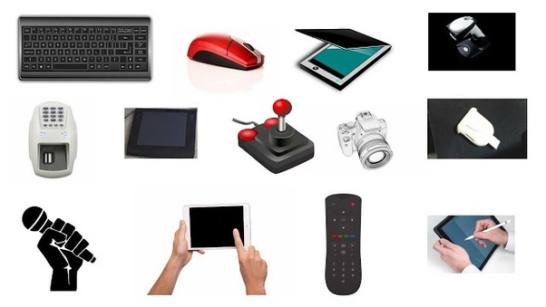
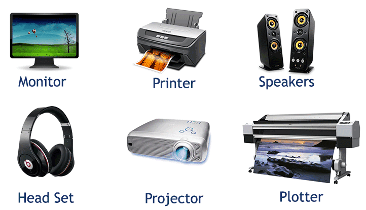
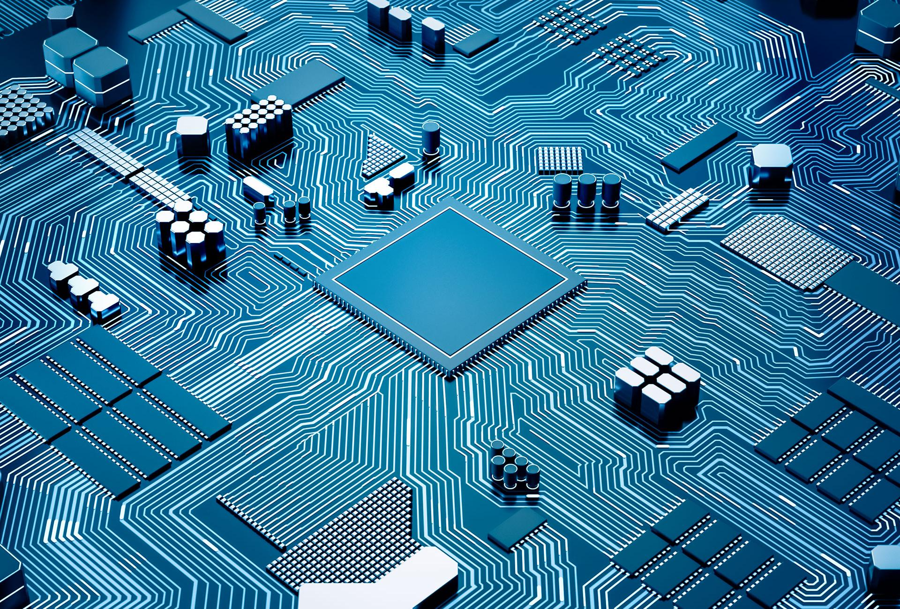
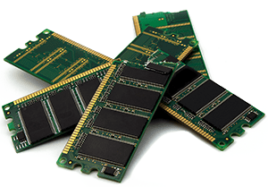
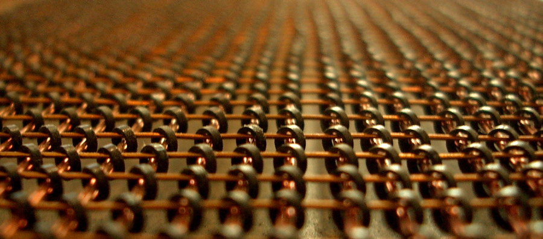
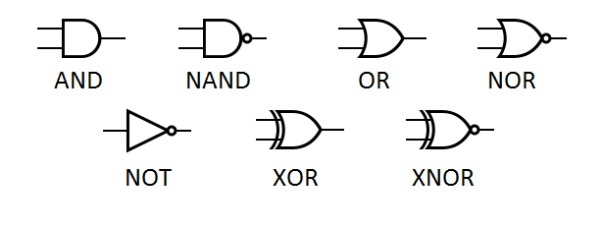

Input Device

There are hundreds of input devices including keyboards, touch screens, mice, camera, and many more. These devices take physical inputs and turns them into zeroes and ones, so the user can control and interact the computer. [Back to Table of Contents]
Output Device

An output device recieves zeroes and ones, and it turns them into something physical. If the device can interpret zeroes and ones, it can turn the data to anything, ranging from output light, to printers output ink on paper. [Back to Table of Contents]

Central Processing Unit (CPU)
The central processing unit is the brain of the computer. It contains all the circuits needed to process input, store data, and output results. If a computer didn't have a CPU, we won't be able to run programs on it. [Back to Table of Contents]

Arithmetic Logic Unit (ALU)
An arithmetic logic unit is a unit in a computer which carries out arithmetic and logical operations. For example, it performs simple addition, subtraction, multiplication, division, and logic operations (OR, AND, etc.) [Back to Table of Contents]

Control Unit
A control unit is part of the computer's CPU (central processing unit). It directs the processor, and tells the computer's memory, arithmetic logic unit, and input and output devices how to react to the instructions sent to the processor. [Back to Table of Contents]

Random Access Memory (RAM)
The random access memory is the internal memory of the CPU that stores data, program and program result. In other words, it contains running programs, and data that you are currently working with. [Back to Table of Contents]
Optical Memory
Optical memory is an electronic storage that uses methods with a laser to store and retrieve data from optical media, like CD's. Optical memory can be classified into many types. [Back to Table of Contents]
Magnetic Memory

Magnetic memory is the main way how data gets stored on magnetic medium. An example of magnetic storage is a hard drive, and magnetic memory is how the data is stored on these devices. [Back to Table of Contents]

Flash Memory
Flash memory is a storage chip that is widely used in embedded systems. It keeps stored data and information even when the power is off. Some examples of flash memory are, your computer's BIOS chip, a memory stick, and more. [Back to Table of Contents]
Logic Gates

Logic gates are a Boolean function. They are the basic building blocks of any digital system, and it is an electronic circuit that has one or more input, but only one output. Logic gates are names as AND gate, OR gate, NOT gate, etc. [Back to Table of Contents]